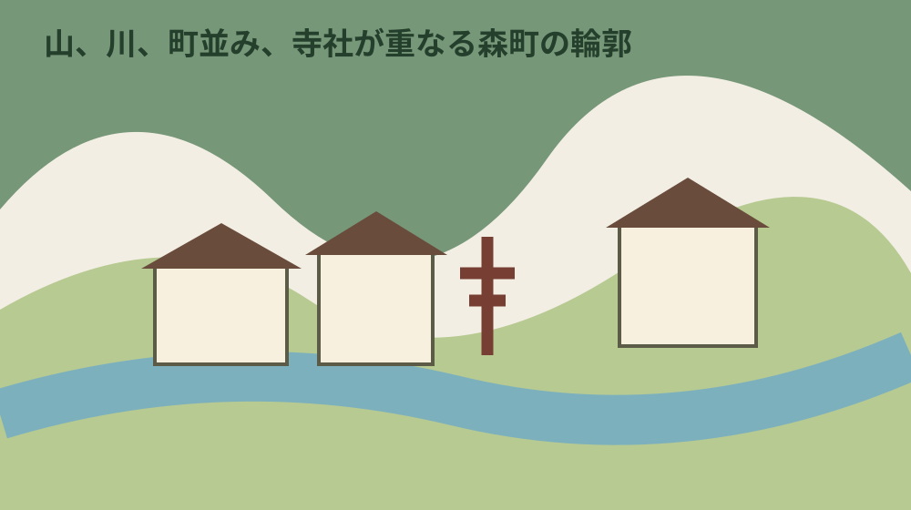
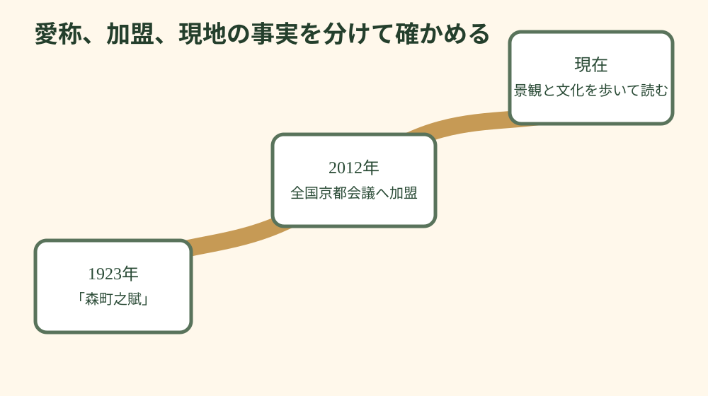
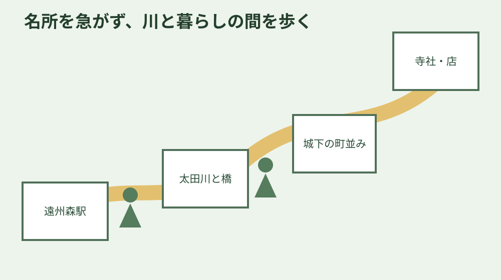

静岡県周智郡森町・歴史と町歩き
なぜ森町は「遠州の小京都」なのか｜町並み・文化・水
「遠州の小京都」は、古い建物が並ぶ一角だけを指す名前ではありません。三方の山、太田川、森市場の町並み、寺社、舞楽や祭礼、茶や菓子を重ねて森町を読むための愛称です。由来として確認できる事実と、今の町を歩く楽しみを分けて案内します。
結論：愛称の根拠と、目の前の景観を混ぜない
森町観光協会は、地理学者の志賀重昂が1923年に森町を訪れ、風景をたたえる「森町之賦」を詠んだことを、森町が小京都と呼ばれる由縁として紹介しています。詩では、三方の山、南に広がる平野、帯のように流れる太田川、にぎやかな町並み、川越しに聞こえる囃子などが描かれたと説明されています。
もう一つの公的な節目は、森町が2012年11月に全国京都会議へ加盟したことです。観光協会の解説では、京都に似た自然と景観、歴史と文化、産業と暮らしなどの要素を示しています。ただし、加盟した年を呼称の始まりと決めつけることはできません。1923年の詩に結び付く由縁と、2012年の組織加盟は別の事実です。
したがって、「京都と同じ碁盤目の都市が残っている」「町全体が文化財として保存されている」といった理解は避けます。森町の公式資料が示すのは、地形、町並み、寺社、芸能、農や商いが重なる地域像です。京都との共通点を探すだけでなく、遠州に根付いた違いを見ることが大切です。
現在の町歩きでは、愛称の説明を読んだ後、山の囲み、太田川との距離、通りの幅、建物の使われ方、祭礼が通る道を自分の目で確かめます。呼称を証明するために似た物だけを集めるのではなく、変わった場所、残った場所、暮らしが続く場所を同時に見ると、森町の輪郭が具体的になります。

森町之賦、全国京都会議、現在の地域像
森町之賦を読むときは、現在の地図と完全に一致する観光案内だと考えない方がよいでしょう。詩は1923年の景観と音を受け止めた表現です。約一世紀の間に道路、建物、商店、川辺の使われ方は変わっています。それでも、三方の山と太田川という大きな地形は、今の町を歩く手掛かりになります。
観光協会は小京都の特徴として、三方を山々に囲まれ中央を太田川が流れること、中心に森市場の町並みがあること、寺社の配置や伝承文化などを挙げています。ここで重要なのは、一項目だけで小京都と呼ぶのではなく、複数の層を合わせている点です。
文化の層には、小國神社と天宮神社の十二段舞楽、山名神社天王祭舞楽などがあります。三社の舞は「遠江森町の舞楽」として国の重要無形民俗文化財に指定されていますが、三つが同じ内容という意味ではありません。小國・天宮の舞楽と山名の風流化した舞には違いがあり、その違い自体が伝播と定着を考える資料です。
町は2023年に公開した遠州の小京都リノベーション推進計画で、祭り、舞楽、古民家、蔵、茶、和菓子などを地域資源として捉え、歴史的文化的建築物や公共施設跡地の活用を検討しています。つまり「昔の姿を凍結する」のではなく、保全と利用、暮らしと来訪を両立させる課題として扱っています。
愛称には観光上の役割がありますが、住民の暮らしより観光客の期待が優先される免許ではありません。古い家は住宅や店舗であり、祭礼の道は生活道路でもあります。小京都らしい写真を得るために玄関前へ立つ、私有地へ入る、長時間車を止めることは避けます。
全国京都会議への加盟基準を知ることも、言葉を丁寧に使う助けになります。観光協会は、京都に似た自然と景観、京都との歴史的なつながり、伝統的な産業や芸能などの基準を説明しています。森町が全項目に当てはまるとする紹介は、観光協会の公式解説を出典として示し、根拠のない最上級表現へ置き換えません。
「遠州」は旧国名の遠江に結び付く地域呼称です。現在の行政区分と旧国の範囲は同じではありません。遠州の小京都という言葉を住所や文化財指定の正式名称と誤解せず、森町を紹介する地域の愛称として扱います。
森町之賦の現代語による説明は観光協会ページにありますが、詩の一部だけを切り取り、現在も同じ音や建物が残ると断定しません。資料が記録した当時の景観と、今日その場で確認できた景観を二列に書くと、変化も森町の歴史として見えてきます。

山、太田川、森市場、城下の町並みを読む
最初に遠州森駅周辺や見通しのよい場所で、山の方向を確認します。地図を北に固定し、太田川が町のどこを流れ、中心市街がどの方向へ広がるかを見ると、個々の名所が地形の中に置かれます。山を背景に写真を撮るだけでなく、昔の人や物がどの道を移動したのか想像できます。
太田川は景観の中心であると同時に、暮らしと災害に関わる川です。橋や堤防では通行を妨げず、水位が高い日や大雨の後は川辺へ近づきません。美しい水辺という説明だけで終わらず、町が公開する防災情報やハザードマップも合わせて見ると、地形を暮らしとして理解できます。
森市場は、山、里、海側から集まる品が取引された場所として説明されています。現在の通りで全盛期の店並みをそのまま再現できるわけではありません。通りの幅、路地、蔵、商店の位置を見て、物資が集まり、人が行き交った町の機能を考えます。
城下地区では、建物正面を少しずつずらした、のこぎりの刃のような町並みが観光協会のコースで紹介されています。これは「城があったから城下町」という単純な地名解釈ではなく、現地で建物線を見る具体的な観察点です。車道へ出て正面から撮影せず、歩道や安全な場所から確かめます。
古い建築の価値は、年代が古そうに見えることだけでは決まりません。改修された家、営業を続ける店、空き家、倉庫など使われ方が異なります。文化財指定の有無を外観だけで推測せず、指定について書く場合は町や県の台帳で確認します。
格子戸、庇、土蔵、看板などは観察の手掛かりですが、外観から建築年代や用途を決めることはできません。同じ通りでも建替え、増築、修繕が重なっています。案内板に説明があれば読み、記載がなければ「古そうな建物」以上の断定を控えます。
町並みは建物だけでなく、道と敷地の関係にも表れます。建物線のずれ、路地の入口、橋へ向かう道、寺社の参道を地図と見比べます。車の流れがある場所では立ち止まらず、安全な場所へ移ってから地図を開きます。
太田川を挟んだ景観を見るときは、対岸の町並みと背後の山を一緒に見ます。近景の建物だけを撮るより、川が町の位置関係をどう分け、どう結んでいるかが分かります。増水、工事、立入規制があれば観察場所を変更します。
寺社、舞楽、祭礼を「暮らしの文化」として見る
森町には小國神社、天宮神社、山名神社をはじめ、地区ごとに寺社があります。参拝の前に、祭神や由緒を断定する非公式なまとめだけでなく、神社、神社庁、町・県の文化財資料を確認します。御朱印、祈祷、駐車、授与所の時間は変わるため、過去の投稿を当日の案内として使いません。
遠江森町の舞楽は1982年1月14日に国指定となりました。静岡県の文化財ナビは、天宮神社、小國神社、山名神社の公開時期の目安を案内していますが、実際の日程、開始時刻、雨天時の扱いはその年の発表が優先です。
舞楽を観覧するときは、舞台上の演目だけでなく、保存会、装束、稚児、道具、会場準備、交通整理など支える側の仕事へ目を向けます。長く続く文化は、当日だけ突然現れるものではありません。練習や継承に私的な時間が使われていることを理解します。
森の祭りなど屋台が動く祭礼では、道路が日常の通行空間から祭礼空間へ変わります。ただし周辺住宅の出入り、緊急車両、運行中の交通が消えるわけではありません。観覧場所、撮影、立入り、駐車は現地の係員と掲示に従います。
祭礼を「京都との共通点」だけで説明すると、森町で変化しながら守られた固有性が薄れます。伝来の道を知った上で、三社の舞の違い、地区ごとの担い手、現在の生活との関係を見ることが、遠州の小京都を深く理解する近道です。
初めての半日散策を組み立てる
初めてなら、訪れる場所を詰め込みすぎず、遠州森駅、太田川、中心の町並み、城下地区、寺社や店のうち三〜四地点を選びます。観光協会には散歩やサイクリングのコースがありますが、移動時間は体力、天候、施設滞在で変わります。
出発前に、天竜浜名湖鉄道の時刻、帰りの列車、バス、駐車場、施設の開館を確認します。駅から歩く場合は、帰りの時刻から逆算し、最後の場所を遠くしすぎないようにします。夏は日陰と水分、冬は日没、雨の日は川と滑りやすい路面を考えます。
町並みでは、正面だけでなく、軒、格子、路地、蔵、用水、店先を見ます。ただし住宅の内部をのぞく、表札を撮る、店の入口をふさぐことはしません。人物が写るときは許可を取り、公開写真では顔や車の番号へ配慮します。
休憩には茶や和菓子を選ぶ方法があります。地域文化を味わう機会ですが、営業日、売切れ、予約の要否は店ごとに違います。「小京都だから必ず和菓子店が開いている」と期待せず、二つの休憩候補を持ちます。
子ども、高齢者、車いす利用者と歩く場合は、距離よりも段差、トイレ、休憩、道路横断、駐車から入口までを確認します。古い町並みは現代の観光施設のように全区間が平坦とは限りません。無理に同じコースを通らず、見やすい区間を短く選びます。
午前は駅と中心の町並み、昼は店で休憩、午後は一つの寺社というように、テーマを三つに絞ると観察が浅くなりません。目的地間を急いで車で移るより、短い区間を歩き、川や路地のつながりを見る方が小京都という地域像を理解しやすくなります。
雨の日は軒や石、路面の表情が変わりますが、撮影のために傘で歩道をふさがないようにします。河川の水位、土砂災害、視界、列車の運行を確認し、警報や規制がある日は延期します。雨の日向けの観光情報があっても、安全確認より優先されません。
祭礼日に町歩きを組み合わせる場合、通常の日より移動時間を長く見積もります。通行止め、駐車場変更、人の集中があり、普段の散策コースを同じ順に進められないことがあります。祭礼を主目的にし、町並みは別日にゆっくり見る選択もあります。
地域の店で話を聞ける機会があっても、忙しい時間に由来を長く質問しません。公開資料で基礎を読んでから、相手が話せる範囲を尋ねます。聞いた話を記事にする場合は、名前を出してよいか、事実確認が必要かを分けます。
帰宅後は、写真を「地形」「町並み」「文化」「現在の暮らし」に分類します。説明できない写真へ推測の見出しを付けず、場所と撮影日だけ記録します。次回の訪問で同じ地点を見れば、季節や利用の変化を比較できます。
散策記録に店名や施設名を書くときは、正式名称と営業確認日を残します。閉店、移転、臨時休業があり得るため、体験を普遍的な営業時間として書き換えません。地図へ載せる場合も、公式住所と入口が一致するか確かめます。
寺社と町並みを結ぶ道では、祭礼のときだけ見える関係があります。屋台の進路、神輿の動線、舞楽の場は普段の散策だけでは分かりません。祭礼資料を読み、通常日の道路では地域の暮らしを優先して静かに歩きます。
森山焼、茶、和菓子といった産物は、景観と別の飾りではなく、土、水、農、商い、人の移動に結び付きます。ただし、全ての店や品を小京都の証拠として一括りにせず、作り手が示す歴史と現在の製法を個別に確認します。
一度の訪問で森町全体を評価しないことも大切です。中心市街と山間部、平日と祭礼日、朝と夕方で景色は変わります。「何もなかった」ではなく、今回見た範囲、時間、開いていた施設を記録すれば、次の人にも誤解の少ない情報になります。
愛称を知る目的は、京都との優劣を比べることではありません。遠州の土地で山、川、信仰、芸能、商いがどう結び付いたかを考える入口です。似ている点と異なる点を同じ重さで見ると、森町固有の暮らしが見えてきます。

町並みを消費しないための観覧マナー
第一に、生活道路を撮影場所として占有しません。三脚を広げる、車道中央へ出る、玄関前に集まる行為は危険で、住民の出入りを妨げます。撮影より通行を優先し、狭い道では一列になります。
第二に、古い建物が公開施設とは限らないことを覚えます。門が開いている、庭が見える、地図に名称があるという理由で敷地へ入りません。見学可能な建物は、公開時間と入口を公式案内で確認します。
第三に、祭礼や法要の場では、カメラを向ける前に現地の案内を見ます。撮影可能でも、フラッシュ、ドローン、舞台前の移動が制限される場合があります。子どもの奉仕者や参列者を無断で近接撮影しません。
第四に、ごみを出さず、店のトイレや駐車場を無断利用しません。公共施設の場所を先に確認し、休憩や買い物をするなら店の営業を妨げない形で利用します。
第五に、古い町並みを「衰えた」「何もない」と一枚の写真で評価しません。空き店舗や改修途中の建物にも所有者と事情があります。分からないことは分からないまま残し、公的資料や聞き取りで確認します。
よくある質問
森町はいつから遠州の小京都と呼ばれていますか
森町観光協会は、地理学者の志賀重昂が1923年に森町を訪れて詠んだ森町之賦を、呼称の由縁として紹介しています。森町は2012年11月に全国京都会議へ加盟しました。
京都のような古都がそのまま残っているのですか
京都の縮小版が一か所に保存されているという意味ではありません。三方の山、太田川、町並み、寺社、舞楽、祭礼など複数の要素を重ねて読む愛称です。
初めてならどこを歩けばよいですか
遠州森駅周辺から太田川、森の町並み、城下地区などを、無理のない半日で結ぶ方法があります。施設の開館、交通、私有地との境界は当日の公式案内で確認してください。
古い建物は自由に撮影できますか
外から見える建物でも住宅や事業所として使われています。敷地へ入らず、人物、表札、車の番号を写さず、道をふさがないようにしてください。
公式情報源と次に読むページ
内容は2026年8月9日に確認しました。施設、交通、祭礼日程は出発前に更新情報を確認してください。